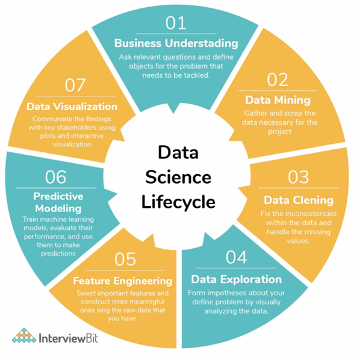
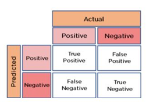

Working with data science
DATA SCIENCE
Data science combines statistics, maths, specialised programs, AI, ML, etc.. Application of specific principles and analytic techniques to extract information from data used in strategic planning, decision making, etc.

Handling missing values: If the dataset is large, we can just remove rows with missing data. For smaller datasets, we can substitute it with the mean or average, using df.mean(), or df.fillna(mean),..
Handling outliers: if the data has garbage value or has extreme values you can drop it. Otherwise, you can maybe try different models, normalize data or use algorithms that are less affected by it
Difference between error terms and residuals: an error term is generally unobservable and a residual is observable and calculable, making it much easier to quantify and visualize. In effect, while an error term represents the way observed data differs from the actual population, a residual represents the way it differs from sample population data. Residuals actually helps us get an accurate estimate of the error.
RMSE is used to measure the deviation of the residuals, and MSE is used to find how close is the line to the actual data. Other metrics: MAE (mean absolute error), MAPE (mean absolute percentage error). from sklearn.metrics import …….
Cost vs loss function: loss function refers to the error of one training example, while a cost function calculates the average error across an entire training set
Confusion matrix is used to describe the performance of the classification model. 
- accuracy: (true positive + true negative) / total observations.. RMSE is a measure of accuracy in regression
- error rate: (false positive + false negative) / total observations
- precision: true positive / (true positive + false positive)
- specificity: true negative / (true negative + false positive)
- sensitivity/recall: true positive / (true positive + false negative).. helps to identify the misclassified positive predicitions
Accuracy metric can be reliable metric only if the dataset is class-balanced. F1 score is a ML evaluation metric that assesses the predictive skill of a model by elaborating on its class-wise performance rather than an overall performance as done by accuracy. If accuracy is 100%, then F1 = 1.
F1 = 2 * precision * recall / (precision + recall)Cut off/threshold is the probability that the prediction is true. It represents the tradeoff between false positives and false negatives. Normally, the cut-off will be on 0.5 (random) but you can increase it. All predicted outcome with a probability above it will be classified in the first class and the other in the second class.
Statistics
- Deterministic vs stochastic process: a deterministic process is a mathematical model where the output depends solely on the input, and there is no randomness involved. In contrast, a stochastic process is a mathematical model that involves randomness and is used to model situations that may not have inherent randomness. A deterministic model is completely predictable also.
- Unit root is a feature of some stochastic processes. A linear stochastic process has a unit root if 1 is a root of the process’s characteristic equation. Such a process is non-stationary. If the other roots of the characteristic equation lie inside the unit circle, then the first difference of the process will be stationary; otherwise, the process will need to be differenced multiple times to become stationary.
- Bias is a systematic tendency to underestimate or overestimate the value of a parameter (you were not random!). It implies that the data selection may have been skewed by the collection criteria (in favor or against an idea). It can also be defined as a systematic (built-in) error which makes all values wrong by a certain amount. In ML, the inability for a ML method to capture the true relationship is called bias, that happens because algorithm makes simplified assumptions so that it can easily understand the target function.